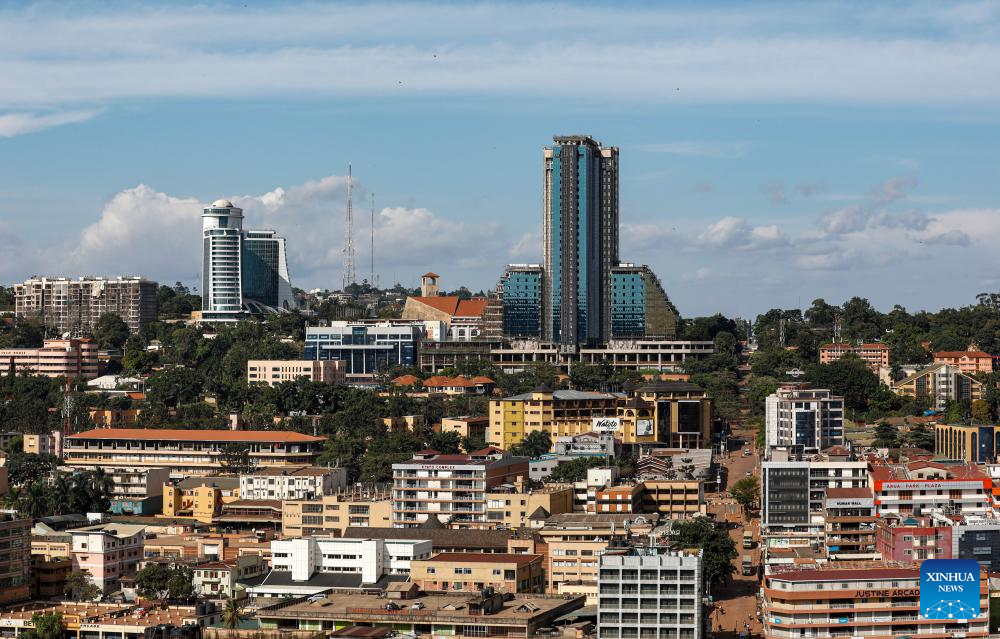
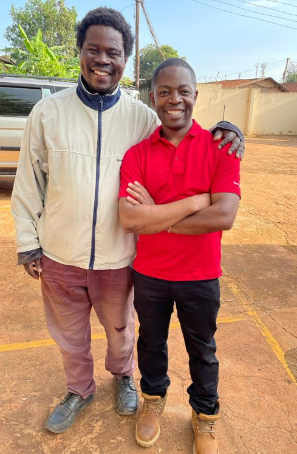
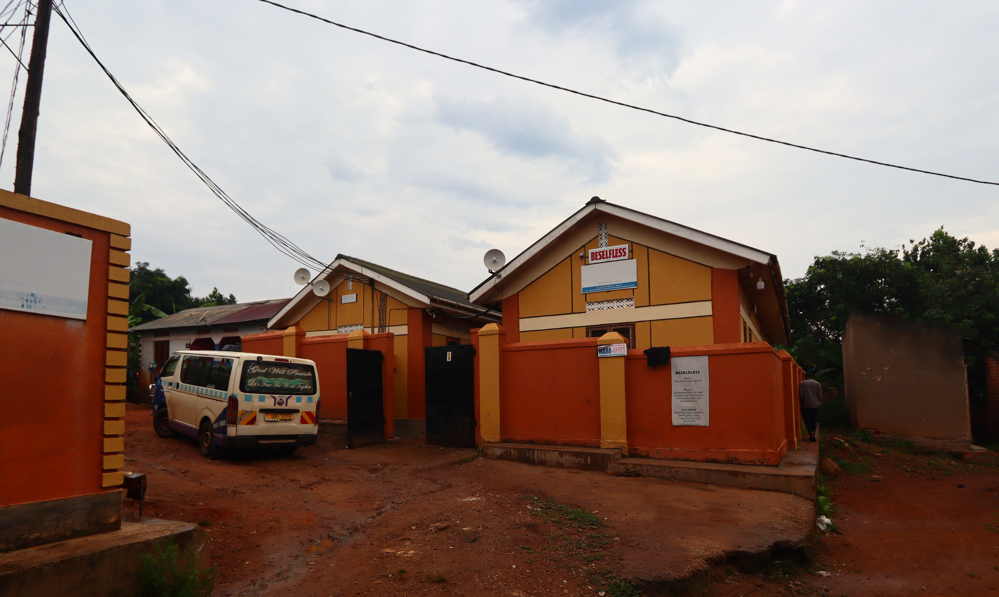

Our History
July 2019
BYU Pathway launched in Kampala, opening doors to online education and mentorship for Ugandan students. This initiative inspired countless young minds to dream bigger, embrace learning, and pursue meaningful careers. Through guidance, encouragement, and support, students began to see the limitless possibilities ahead, igniting hope and fostering resilience that continues to shape their journeys.
December 2022
Charles Nyanzi visited Uganda to meet Stephen William Maraka, strengthening bonds of support and mentorship. Together, they discussed sponsorship for BYU Pathway students and encouraged Julius Aojan to pursue further studies. This visit symbolized the power of collaboration, inspiring local communities to believe in their potential and embrace education as a gateway to transformation, hope, and a brighter future.
January 2023

145 students enrolled under Selfless Inc sponsorship, marking a turning point in their academic journeys. Mentorship programs, leadership workshops, and skill-building initiatives were launched, empowering youth with confidence, knowledge, and resilience. Each student was given tools to overcome challenges, develop character, and pursue dreams, demonstrating that with opportunity, support, and determination, every young mind can shine brightly and impact the world.
August 2023
Mukono Tech Center opened its doors with fully equipped programs, fostering innovation, creativity, and collaboration. Young minds explored STEM, entrepreneurship, and technology, discovering their abilities and passions. This center became a beacon of hope, nurturing the next generation of leaders, inventors, and changemakers. Students learned not only skills but also courage, vision, and the determination to transform communities and inspire others.